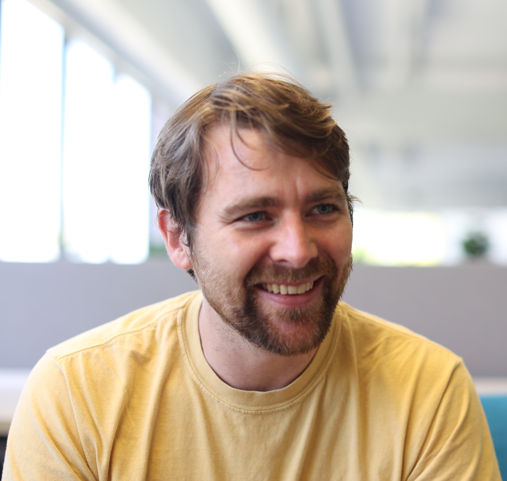

Hi! I am a researcher at Imbue where I work on building machine learning agents and software that help humans code.
Previously, I completed my PhD at the Australian National University, advised by Hanna Kurniawati. My thesis focused on building practical agents for partially observable, multi-agent environments by leveraging the combination of planning and reinforcement learning.
When I'm not writing code or running experiments, I spend my time rock climbing and being outside in nature.
Selected Publications (See all)
POSGGym: A Library for Decision-Theoretic Planning and Learning in Partially Observable, Multi-Agent Environments
Alex Smith, Jane Doe, John Wilson (2024)
International Conference on Machine Learning (ICML)
Robust Neural Networks: A Survey
Alex Smith, Sarah Johnson (2022)
Journal of Machine Learning Research
Blog
January 15, 2024